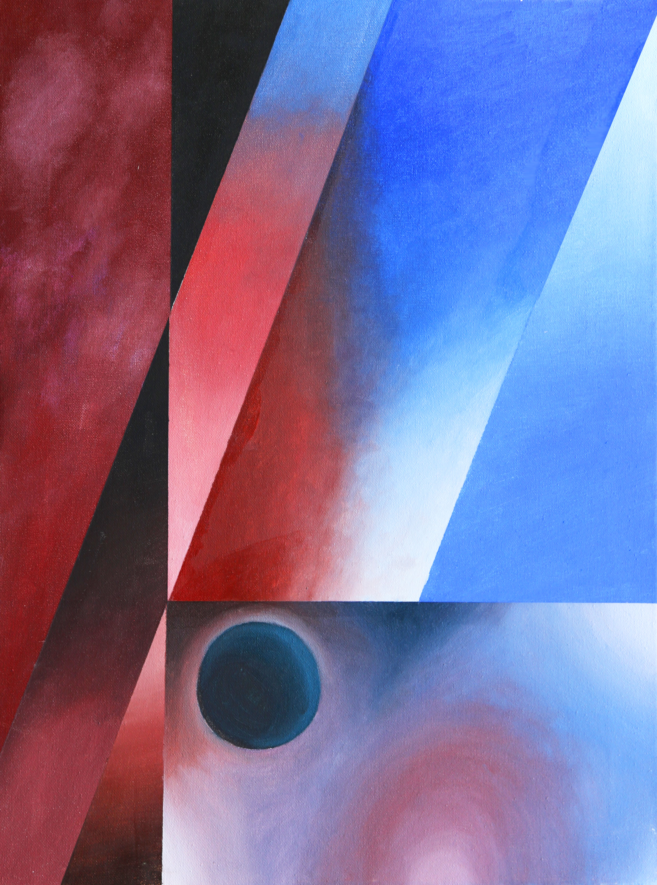
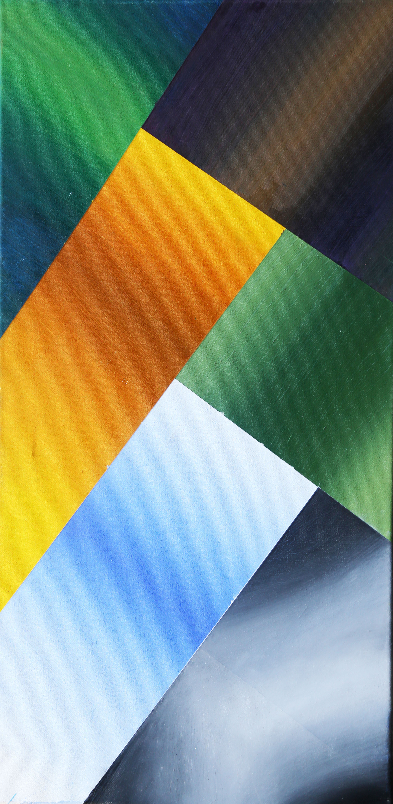
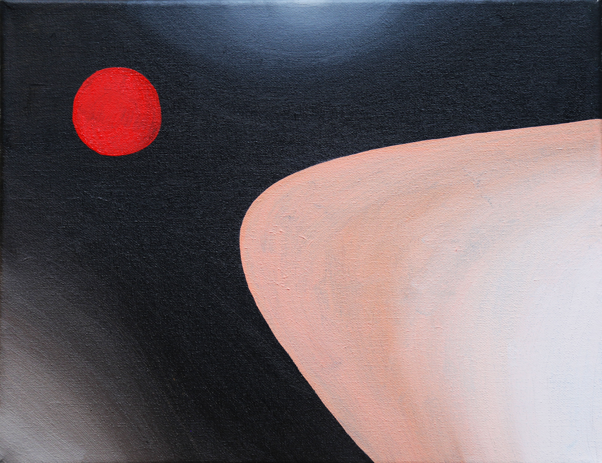
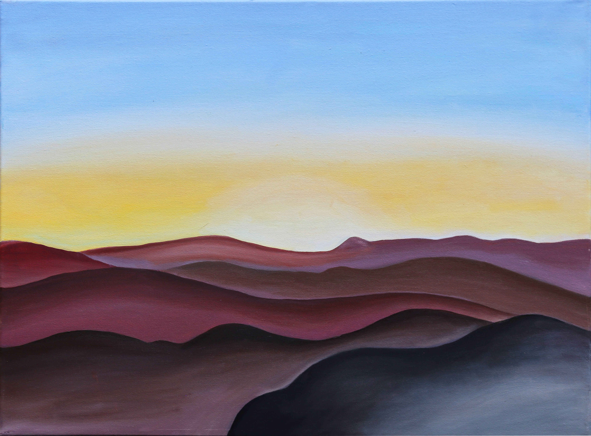
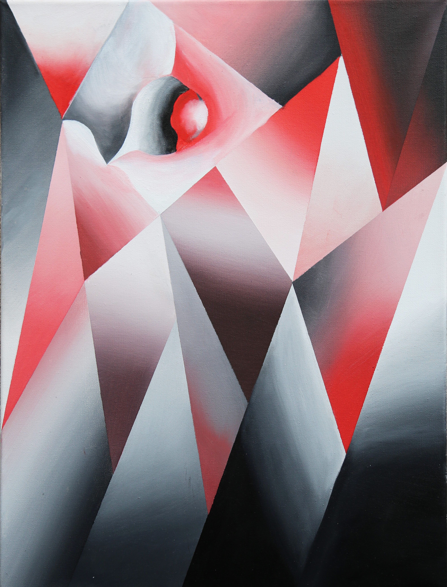
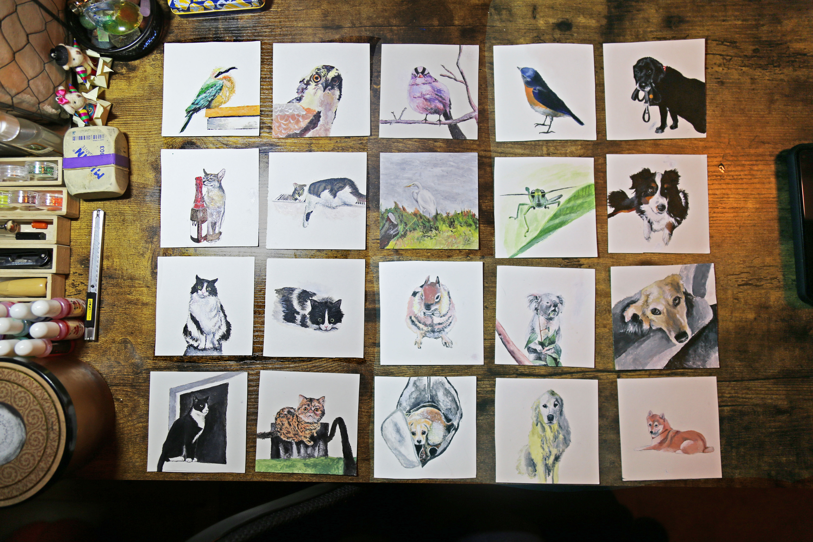

Xindi Kang is an artist and researcher working with traditional and interactive media. Her interest lies
in the intersection of artistic expression and engineering. She aims to create compositions that excavate the underlying connections that transcends cultural divides and disciplinary boundaries. Born and raised in Beijing, China, but culturally adapted in America, she views herself as a translator of culture and ideologies, enabling two ends of the spectrum to find middle ground through mutual understanding.
She received her Bachelor's degree in Art and her Master of Science degree in Media Arts and Technology at
the University of California, Santa Barbara.
Aurora
Data Visualization | Processing
Oscilla
Interactive Installation | Allolib + Pd
Luminaria
LED Installation | Arduino
GeoD
Data Visualization | Google Maps JS API
Invisible Machine
Exhibition | Web Design/Curation
Painting Series
Paintings | Oil on canvas
xindi[at]ucsb[dot]edu
Aurora
Aurora is a 3D data visualization of the relationship between people’s level of curiosity
for the
aurora borealis and the actual intensity of the aurora borealis in the North Pole. The
visualization demonstrates book-checkout data
from
the Seattle Public Library and the solar wind intensity data from NASA from 2006-2014.
The raw data sets were
processed through SQL and Python Jupyter Notebook and then visualized in a spherical
coordinate system to allow 4 dimensions of information (month, year, dewey class, and
level of interest/ intensity) to exist simultaneously. Users can scroll
through 10 years of data with the GUI element and see the
fluctuation between years animated. They can also turn on and off different
scales such as month, year, and dewey class with key press interaction.
Oscilla
Sound can be visualized in a number of ways. Different forms of representation
are
typically used as analytical tools in the context of scientific inquiry. Oscilla
is
an
audio-visual installation that allows the audience to interact with a waveform
with
their own voice through a microphone, and experience both the acoustic and
visual
results. The audience is encouraged by the visual feedback from the waveform and
the
audio feedback from the ring-modulation filter to produce more interesting
results
with
their voice. With more experimenting, the audience can deduce certain patterns
hidden in
the algorithm of the visual pattern and gain control over them.
// In collaboration with Rodney
Duplessis
// Currently Exhibiting at Museum of Sensory
and
Movement Experiences
Luminaria
Luminaria is an LED installation as part of IV Lightworks exhibition. LEDs
installed on
a
bridge in Anisquoio Park, with colors and patters responding to incoming
traffic
(pedestrians, bikes and skateboards) detected by transducers attached
underneath the
bridge. Responses are made programmable by four Arduino units
// In collaboration with: David Aleman, Hsin Hsuan Chen, Chris Hoang,
Intae Hwang,
Xindi
Kang, Lu Liu, Wen Liu, Brenda Morales, Andrew Piepenbrink, PJ Powers,
Rebecca
Prieto,
Annika Tan, Leonardo Vargas, Muhammad Hafiz Wan Rosli, Dan Wang, Carmen
Wen,
Junxiang
Yao
// Exhibited June 2016 - June 2017, Anisq'Oyo Park, Isla Vista, CA
GeoD
GeoD visualizes geographical information (locations and entities with
geo-coded
information) contained in topic models. It can be used to analyze
locations
discussed in
the whole corpus underlying a whole model or in a specific topic.
The geo-coded information that MetadataGeoD maps is gathered from the
corpus for a
topic
model first through a “wikification” process (using the Illinois
Wikifier; see L.
Ratinov et al., 2011) that confirms the recognition of named
entities by
checking for
correspondence to locations, organizations, etc., for which there are
articles in
Wikipedia, and secondly through collecting latitude/longitude
information for the
data.
(However, not all possible named entities can be recognized and geo-coded
as
locations in
this way.)
// Working Version of Geod with 250 Topic Models from WE1S Corpus
// Developed for the WE1S
Project
included in the Topic
Model Observatory
// Publications:
https://doi.org/10.1016/j.biosystems.2020.104208
https://doi.org/10.31219/osf.io/896wb
MAT End of Year Show 2018 -- InVisible Machine
MAT End of Year Show is a curated exhibition featuring media art works and research demos from the Media Arts and Technology program. Each year we welcome hundreds of visitors from all around the world to celebrate a year of extraordinary work with us. Our theme this year is 'Invisible Machine', representing the mechanism of inducing transformation in the world of Media Arts. At MAT, our community research is the art of the “invisible becoming visible” in every field, from revealing the abstracted processes between input and output of a machine, to turning the complicated scientific data into shapes and colors. As technologists and artists, we weave through this diverse research in novel ways,creating new works that transcend the present way we view the world. Our show is the product of this process, and we invite all to join us in its celebration.
// Show Website: show.mat.ucsb.edu/2018
// Show Highlights:www.mat.ucsb.edu/eoys2018/
    
